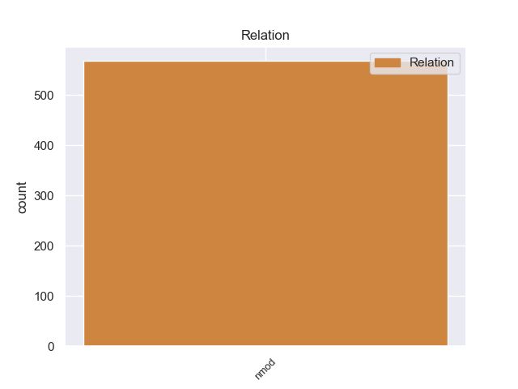
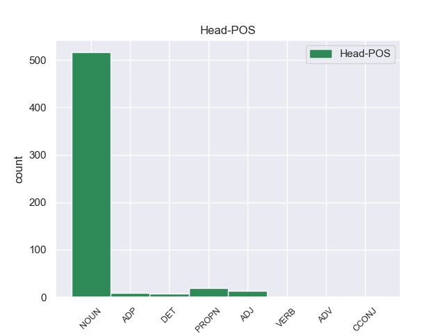
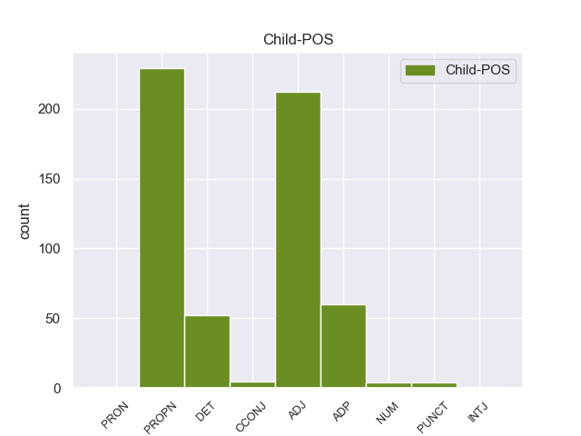

Distribution of features within this leaf



Agreement Rules sorted by frequency.
- When the dependent token is the nominal modifier(nmod) of the head token, and the dependent token is PROPN.
1 El _ _ _ _ 0 _ _ _
2 producto _ _ _ _ 0 _ _ _
3 estrella _ _ _ _ 0 _ _ _
4 de _ _ _ _ 0 _ _ _
5 el _ _ _ _ 0 _ _ _
6 lujoso _ _ _ _ 0 _ _ _
7 Haikko _ _ _ _ 0 _ _ _
8 Spa _ _ _ _ 0 _ _ _
9 , _ _ _ _ 0 _ _ _
10 situado _ _ _ _ 0 _ _ _
11 en _ _ _ _ 0 _ _ _
12 la _ _ _ _ 0 _ _ _
13 localidad _ _ _ _ 0 _ _ _
14 de _ _ _ _ 0 _ _ _
15 Porvoo _ _ _ _ 0 _ _ _
16 , _ _ _ _ 0 _ _ _
17 es _ _ _ _ 0 _ _ _
18 la _ _ _ _ 0 _ _ _
19 terapia _ _ _ _ 0 _ _ _
20 Cryo cryo PROPN _ Gender=Masc|Number=Sing 25 nmod _ _
21 : _ _ _ _ 0 _ _ _
22 el _ _ _ _ 0 _ _ _
23 cuerpo _ _ _ _ 0 _ _ _
24 se _ _ _ _ 0 _ _ _
25 somete somete NOUN _ Gender=Masc|Number=Sing 0 _ _ _
26 durante _ _ _ _ 0 _ _ _
27 los _ _ _ _ 0 _ _ _
28 primeros _ _ _ _ 0 _ _ _
29 minutos _ _ _ _ 0 _ _ _
30 a _ _ _ _ 0 _ _ _
31 temperaturas _ _ _ _ 0 _ _ _
32 de _ _ _ _ 0 _ _ _
33 -- _ _ _ _ 0 _ _ _
34 30 _ _ _ _ 0 _ _ _
35 y _ _ _ _ 0 _ _ _
36 -- _ _ _ _ 0 _ _ _
37 60 _ _ _ _ 0 _ _ _
38 º _ _ _ _ 0 _ _ _
39 C _ _ _ _ 0 _ _ _
40 en _ _ _ _ 0 _ _ _
41 las _ _ _ _ 0 _ _ _
42 salas _ _ _ _ 0 _ _ _
43 aisladas _ _ _ _ 0 _ _ _
44 antes _ _ _ _ 0 _ _ _
45 de _ _ _ _ 0 _ _ _
46 exponer _ _ _ _ 0 _ _ _
47 se _ _ _ _ 0 _ _ _
48 a _ _ _ _ 0 _ _ _
49 el _ _ _ _ 0 _ _ _
50 tratamiento _ _ _ _ 0 _ _ _
51 de _ _ _ _ 0 _ _ _
52 frío _ _ _ _ 0 _ _ _
53 a _ _ _ _ 0 _ _ _
54 -110 _ _ _ _ 0 _ _ _
55 º _ _ _ _ 0 _ _ _
56 C. _ _ _ _ 0 _ _ _
57 Desde _ _ _ _ 0 _ _ _
58 la _ _ _ _ 0 _ _ _
59 primera _ _ _ _ 0 _ _ _
60 sesión _ _ _ _ 0 _ _ _
61 se _ _ _ _ 0 _ _ _
62 percibe _ _ _ _ 0 _ _ _
63 el _ _ _ _ 0 _ _ _
64 aporte _ _ _ _ 0 _ _ _
65 de _ _ _ _ 0 _ _ _
66 energía _ _ _ _ 0 _ _ _
67 resultado _ _ _ _ 0 _ _ _
68 de _ _ _ _ 0 _ _ _
69 la _ _ _ _ 0 _ _ _
70 reducción _ _ _ _ 0 _ _ _
71 de _ _ _ _ 0 _ _ _
72 tensión _ _ _ _ 0 _ _ _
73 muscular _ _ _ _ 0 _ _ _
74 y _ _ _ _ 0 _ _ _
75 el _ _ _ _ 0 _ _ _
76 alivio _ _ _ _ 0 _ _ _
77 de _ _ _ _ 0 _ _ _
78 dolores _ _ _ _ 0 _ _ _
79 y _ _ _ _ 0 _ _ _
80 enfermedades _ _ _ _ 0 _ _ _
81 . _ _ _ _ 0 _ _ _
1 Igualmente _ _ _ _ 0 _ _ _
2 , _ _ _ _ 0 _ _ _
3 la _ _ _ _ 0 _ _ _
4 presencia _ _ _ _ 0 _ _ _
5 de _ _ _ _ 0 _ _ _
6 Ledesma _ _ _ _ 0 _ _ _
7 está _ _ _ _ 0 _ _ _
8 supeditada _ _ _ _ 0 _ _ _
9 a _ _ _ _ 0 _ _ _
10 la _ _ _ _ 0 _ _ _
11 actuación actuación NOUN _ Gender=Fem|Number=Sing 0 _ _ _
12 de _ _ _ _ 0 _ _ _
13 el _ _ _ _ 0 _ _ _
14 seleccionado _ _ _ _ 0 _ _ _
15 argentino _ _ _ _ 0 _ _ _
16 sub _ _ _ _ 0 _ _ _
17 20 _ _ _ _ 0 _ _ _
18 en _ _ _ _ 0 _ _ _
19 los _ _ _ _ 0 _ _ _
20 Panamericanos _ _ _ _ 0 _ _ _
21 , _ _ _ _ 0 _ _ _
22 ya _ _ _ _ 0 _ _ _
23 que _ _ _ _ 0 _ _ _
24 Cirigliano _ _ _ _ 0 _ _ _
25 sólo _ _ _ _ 0 _ _ _
26 estaría _ _ _ _ 0 _ _ _
27 en _ _ _ _ 0 _ _ _
28 condiciones _ _ _ _ 0 _ _ _
29 de _ _ _ _ 0 _ _ _
30 jugar _ _ _ _ 0 _ _ _
31 ante _ _ _ _ 0 _ _ _
32 Aldosivi _ _ _ _ 0 _ _ _
33 en _ _ _ _ 0 _ _ _
34 caso _ _ _ _ 0 _ _ _
35 de _ _ _ _ 0 _ _ _
36 que _ _ _ _ 0 _ _ _
37 el _ _ _ _ 0 _ _ _
38 elenco _ _ _ _ 0 _ _ _
39 " _ _ _ _ 0 _ _ _
40 albiceleste albiceleste ADJ _ Gender=Fem|Number=Sing 11 nmod _ _
41 " _ _ _ _ 0 _ _ _
42 no _ _ _ _ 0 _ _ _
43 supere _ _ _ _ 0 _ _ _
44 la _ _ _ _ 0 _ _ _
45 primera _ _ _ _ 0 _ _ _
46 ronda _ _ _ _ 0 _ _ _
47 , _ _ _ _ 0 _ _ _
48 algo _ _ _ _ 0 _ _ _
49 poco _ _ _ _ 0 _ _ _
50 probable _ _ _ _ 0 _ _ _
51 . _ _ _ _ 0 _ _ _
1 La _ _ _ _ 0 _ _ _
2 OTAN _ _ _ _ 0 _ _ _
3 llevó _ _ _ _ 0 _ _ _
4 a _ _ _ _ 0 _ _ _
5 cabo _ _ _ _ 0 _ _ _
6 el _ _ _ _ 0 _ _ _
7 viernes _ _ _ _ 0 _ _ _
8 por _ _ _ _ 0 _ _ _
9 la _ _ _ _ 0 _ _ _
10 noche _ _ _ _ 0 _ _ _
11 varias _ _ _ _ 0 _ _ _
12 incursiones _ _ _ _ 0 _ _ _
13 sobre _ _ _ _ 0 _ _ _
14 Trípoli _ _ _ _ 0 _ _ _
15 , _ _ _ _ 0 _ _ _
16 apuntando _ _ _ _ 0 _ _ _
17 en _ _ _ _ 0 _ _ _
18 particular _ _ _ _ 0 _ _ _
19 hacia _ _ _ _ 0 _ _ _
20 el _ _ _ _ 0 _ _ _
21 sector _ _ _ _ 0 _ _ _
22 donde _ _ _ _ 0 _ _ _
23 está _ _ _ _ 0 _ _ _
24 ubicada ubicada ADP _ Gender=Fem|Number=Sing 26 nmod _ _
25 la _ _ _ _ 0 _ _ _
26 residencia residencia NOUN _ Gender=Fem|Number=Sing 0 _ _ _
27 de _ _ _ _ 0 _ _ _
28 el _ _ _ _ 0 _ _ _
29 líder _ _ _ _ 0 _ _ _
30 libio _ _ _ _ 0 _ _ _
31 Muamar _ _ _ _ 0 _ _ _
32 Gadafi _ _ _ _ 0 _ _ _
33 , _ _ _ _ 0 _ _ _
34 cerca _ _ _ _ 0 _ _ _
35 de _ _ _ _ 0 _ _ _
36 el _ _ _ _ 0 _ _ _
37 centro _ _ _ _ 0 _ _ _
38 de _ _ _ _ 0 _ _ _
39 la _ _ _ _ 0 _ _ _
40 capital _ _ _ _ 0 _ _ _
41 . _ _ _ _ 0 _ _ _
1 « _ _ _ _ 0 _ _ _
2 Walk _ _ _ _ 0 _ _ _
3 On _ _ _ _ 0 _ _ _
4 The _ _ _ _ 0 _ _ _
5 Water _ _ _ _ 0 _ _ _
6 » _ _ _ _ 0 _ _ _
7 - _ _ _ _ 0 _ _ _
8 en _ _ _ _ 0 _ _ _
9 español _ _ _ _ 0 _ _ _
10 : _ _ _ _ 0 _ _ _
11 « _ _ _ _ 0 _ _ _
12 Caminar _ _ _ _ 0 _ _ _
13 sobre _ _ _ _ 0 _ _ _
14 el _ _ _ _ 0 _ _ _
15 agua _ _ _ _ 0 _ _ _
16 » _ _ _ _ 0 _ _ _
17 -- _ _ _ _ 0 _ _ _
18 es _ _ _ _ 0 _ _ _
19 una _ _ _ _ 0 _ _ _
20 canción canción NOUN _ Gender=Fem|Number=Sing 0 _ _ _
21 , _ _ _ _ 0 _ _ _
22 segundo _ _ _ _ 0 _ _ _
23 sencillo _ _ _ _ 0 _ _ _
24 de _ _ _ _ 0 _ _ _
25 el _ _ _ _ 0 _ _ _
26 álbum _ _ _ _ 0 _ _ _
27 The _ _ _ _ 0 _ _ _
28 Lost los DET _ Gender=Fem|Number=Sing 20 nmod _ _
29 Get _ _ _ _ 0 _ _ _
30 Found _ _ _ _ 0 _ _ _
31 de _ _ _ _ 0 _ _ _
32 la _ _ _ _ 0 _ _ _
33 cantante _ _ _ _ 0 _ _ _
34 cristiana _ _ _ _ 0 _ _ _
35 Britt _ _ _ _ 0 _ _ _
36 Nicole _ _ _ _ 0 _ _ _
37 . _ _ _ _ 0 _ _ _
1 Cada _ _ _ _ 0 _ _ _
2 barco _ _ _ _ 0 _ _ _
3 posee _ _ _ _ 0 _ _ _
4 instalaciones instalaciones NOUN _ Gender=Fem|Number=Sing 0 _ _ _
5 médicas _ _ _ _ 0 _ _ _
6 de _ _ _ _ 0 _ _ _
7 nivel _ _ _ _ 0 _ _ _
8 3 _ _ _ _ 0 _ _ _
9 de _ _ _ _ 0 _ _ _
10 la _ _ _ _ 0 _ _ _
11 OTAN _ _ _ _ 0 _ _ _
12 , _ _ _ _ 0 _ _ _
13 es _ _ _ _ 0 _ _ _
14 decir _ _ _ _ 0 _ _ _
15 , _ _ _ _ 0 _ _ _
16 equivalente _ _ _ _ 0 _ _ _
17 a _ _ _ _ 0 _ _ _
18 un _ _ _ _ 0 _ _ _
19 hospital _ _ _ _ 0 _ _ _
20 de _ _ _ _ 0 _ _ _
21 campaña _ _ _ _ 0 _ _ _
22 de _ _ _ _ 0 _ _ _
23 una _ _ _ _ 0 _ _ _
24 división _ _ _ _ 0 _ _ _
25 de _ _ _ _ 0 _ _ _
26 el _ _ _ _ 0 _ _ _
27 ejército _ _ _ _ 0 _ _ _
28 o _ _ _ _ 0 _ _ _
29 cuerpo _ _ _ _ 0 _ _ _
30 de _ _ _ _ 0 _ _ _
31 ejército _ _ _ _ 0 _ _ _
32 , _ _ _ _ 0 _ _ _
33 o _ _ _ _ 0 _ _ _
34 en _ _ _ _ 0 _ _ _
35 el _ _ _ _ 0 _ _ _
36 hospital _ _ _ _ 0 _ _ _
37 de _ _ _ _ 0 _ _ _
38 una _ _ _ _ 0 _ _ _
39 ciudad _ _ _ _ 0 _ _ _
40 de _ _ _ _ 0 _ _ _
41 25.000 _ _ _ _ 0 _ _ _
42 habitantes _ _ _ _ 0 _ _ _
43 , _ _ _ _ 0 _ _ _
44 complementado _ _ _ _ 0 _ _ _
45 con _ _ _ _ 0 _ _ _
46 odontología odontología CCONJ _ Gender=Fem|Number=Sing 4 nmod _ _
47 , _ _ _ _ 0 _ _ _
48 diagnóstico _ _ _ _ 0 _ _ _
49 , _ _ _ _ 0 _ _ _
50 especialistas _ _ _ _ 0 _ _ _
51 médicos _ _ _ _ 0 _ _ _
52 y _ _ _ _ 0 _ _ _
53 quirúrgicos _ _ _ _ 0 _ _ _
54 , _ _ _ _ 0 _ _ _
55 higiene _ _ _ _ 0 _ _ _
56 alimentaria _ _ _ _ 0 _ _ _
57 y _ _ _ _ 0 _ _ _
58 capacidades _ _ _ _ 0 _ _ _
59 psicológicas _ _ _ _ 0 _ _ _
60 . _ _ _ _ 0 _ _ _
1 Filocalia _ _ _ _ 0 _ _ _
2 o _ _ _ _ 0 _ _ _
3 filokalia _ _ _ _ 0 _ _ _
4 ( _ _ _ _ 0 _ _ _
5 en _ _ _ _ 0 _ _ _
6 griego _ _ _ _ 0 _ _ _
7 Φιλοκαλια _ _ _ _ 0 _ _ _
8 , _ _ _ _ 0 _ _ _
9 de _ _ _ _ 0 _ _ _
10 φιλíα _ _ _ _ 0 _ _ _
11 = _ _ _ _ 0 _ _ _
12 afición _ _ _ _ 0 _ _ _
13 , _ _ _ _ 0 _ _ _
14 amor _ _ _ _ 0 _ _ _
15 y _ _ _ _ 0 _ _ _
16 de _ _ _ _ 0 _ _ _
17 καλóς _ _ _ _ 0 _ _ _
18 = _ _ _ _ 0 _ _ _
19 bello _ _ _ _ 0 _ _ _
20 , _ _ _ _ 0 _ _ _
21 belleza _ _ _ _ 0 _ _ _
22 ) _ _ _ _ 0 _ _ _
23 , _ _ _ _ 0 _ _ _
24 nombre _ _ _ _ 0 _ _ _
25 que _ _ _ _ 0 _ _ _
26 recibe _ _ _ _ 0 _ _ _
27 una _ _ _ _ 0 _ _ _
28 colección colección NOUN _ Gender=Masc|Number=Sing 0 _ _ _
29 ya _ _ _ _ 0 _ _ _
30 clásica _ _ _ _ 0 _ _ _
31 de _ _ _ _ 0 _ _ _
32 textos _ _ _ _ 0 _ _ _
33 dedicados dedicados PUNCT _ Gender=Masc|Number=Sing 28 nmod _ _
34 a _ _ _ _ 0 _ _ _
35 la _ _ _ _ 0 _ _ _
36 mística _ _ _ _ 0 _ _ _
37 y _ _ _ _ 0 _ _ _
38 ascesis _ _ _ _ 0 _ _ _
39 en _ _ _ _ 0 _ _ _
40 la _ _ _ _ 0 _ _ _
41 Iglesia _ _ _ _ 0 _ _ _
42 Ortodoxa _ _ _ _ 0 _ _ _
43 , _ _ _ _ 0 _ _ _
44 uno _ _ _ _ 0 _ _ _
45 de _ _ _ _ 0 _ _ _
46 sus _ _ _ _ 0 _ _ _
47 principales _ _ _ _ 0 _ _ _
48 temas _ _ _ _ 0 _ _ _
49 es _ _ _ _ 0 _ _ _
50 el _ _ _ _ 0 _ _ _
51 hesicasmo _ _ _ _ 0 _ _ _
52 . _ _ _ _ 0 _ _ _
1 El _ _ _ _ 0 _ _ _
2 próximo _ _ _ _ 0 _ _ _
3 seguramente _ _ _ _ 0 _ _ _
4 recogerá _ _ _ _ 0 _ _ _
5 el _ _ _ _ 0 _ _ _
6 hilo hilo NOUN _ Gender=Masc|Number=Sing 0 _ _ _
7 de _ _ _ _ 0 _ _ _
8 lo él PRON _ Case=Acc|Gender=Masc|Number=Sing|Person=3|PrepCase=Npr|PronType=Prs 6 nmod _ _
9 que _ _ _ _ 0 _ _ _
10 nos _ _ _ _ 0 _ _ _
11 deja _ _ _ _ 0 _ _ _
12 1999 _ _ _ _ 0 _ _ _
13 , _ _ _ _ 0 _ _ _
14 pero _ _ _ _ 0 _ _ _
15 no _ _ _ _ 0 _ _ _
16 tenemos _ _ _ _ 0 _ _ _
17 muy _ _ _ _ 0 _ _ _
18 claro _ _ _ _ 0 _ _ _
19 todavía _ _ _ _ 0 _ _ _
20 el _ _ _ _ 0 _ _ _
21 tipo _ _ _ _ 0 _ _ _
22 de _ _ _ _ 0 _ _ _
23 rol _ _ _ _ 0 _ _ _
24 que _ _ _ _ 0 _ _ _
25 tendrá _ _ _ _ 0 _ _ _
26 este _ _ _ _ 0 _ _ _
27 disco _ _ _ _ 0 _ _ _
28 , _ _ _ _ 0 _ _ _
29 qué _ _ _ _ 0 _ _ _
30 sonoridad _ _ _ _ 0 _ _ _
31 . _ _ _ _ 0 _ _ _
1 El _ _ _ _ 0 _ _ _
2 uso uso NOUN _ Gender=Masc|Number=Sing 0 _ _ _
3 de _ _ _ _ 0 _ _ _
4 antitrombóticos antitrombóticos NUM _ Gender=Masc|Number=Sing 2 nmod _ _
5 se _ _ _ _ 0 _ _ _
6 indica _ _ _ _ 0 _ _ _
7 tan _ _ _ _ 0 _ _ _
8 pronto _ _ _ _ 0 _ _ _
9 como _ _ _ _ 0 _ _ _
10 se _ _ _ _ 0 _ _ _
11 ha _ _ _ _ 0 _ _ _
12 descartado _ _ _ _ 0 _ _ _
13 una _ _ _ _ 0 _ _ _
14 hemorragia _ _ _ _ 0 _ _ _
15 intracraneal _ _ _ _ 0 _ _ _
16 . _ _ _ _ 0 _ _ _
Disagree Examples:
1 Mazatlán _ _ _ _ 0 _ _ _
2 se _ _ _ _ 0 _ _ _
3 impone _ _ _ _ 0 _ _ _
4 a _ _ _ _ 0 _ _ _
5 la _ _ _ _ 0 _ _ _
6 Región _ _ _ _ 0 _ _ _
7 de _ _ _ _ 0 _ _ _
8 Juárez _ _ _ _ 0 _ _ _
9 8 _ _ _ _ 0 _ _ _
10 carreras _ _ _ _ 0 _ _ _
11 a _ _ _ _ 0 _ _ _
12 3.Gilberto _ _ _ _ 0 _ _ _
13 Ramírez _ _ _ _ 0 _ _ _
14 se _ _ _ _ 0 _ _ _
15 convirtió _ _ _ _ 0 _ _ _
16 en _ _ _ _ 0 _ _ _
17 el _ _ _ _ 0 _ _ _
18 verdugo _ _ _ _ 0 _ _ _
19 de _ _ _ _ 0 _ _ _
20 Chihuahua _ _ _ _ 0 _ _ _
21 , _ _ _ _ 0 _ _ _
22 a _ _ _ _ 0 _ _ _
23 el _ _ _ _ 0 _ _ _
24 pegar _ _ _ _ 0 _ _ _
25 jonrón _ _ _ _ 0 _ _ _
26 solitario _ _ _ _ 0 _ _ _
27 que _ _ _ _ 0 _ _ _
28 dejó _ _ _ _ 0 _ _ _
29 en _ _ _ _ 0 _ _ _
30 el _ _ _ _ 0 _ _ _
31 terreno _ _ _ _ 0 _ _ _
32 a _ _ _ _ 0 _ _ _
33 Chihuahua _ _ _ _ 0 _ _ _
34 , _ _ _ _ 0 _ _ _
35 en _ _ _ _ 0 _ _ _
36 el _ _ _ _ 0 _ _ _
37 triunfo _ _ _ _ 0 _ _ _
38 de _ _ _ _ 0 _ _ _
39 Tijuana _ _ _ _ 0 _ _ _
40 4-3 _ _ _ _ 0 _ _ _
41 , _ _ _ _ 0 _ _ _
42 a _ _ _ _ 0 _ _ _
43 el _ _ _ _ 0 _ _ _
44 concluir _ _ _ _ 0 _ _ _
45 la _ _ _ _ 0 _ _ _
46 segunda _ _ _ _ 0 _ _ _
47 jornada jornada NOUN _ Gender=Fem|Number=Sing 0 _ _ _
48 de _ _ _ _ 0 _ _ _
49 el _ _ _ _ 0 _ _ _
50 Campeonato campeonato PROPN _ Gender=Masc|Number=Sing 47 nmod _ _
51 Nacional _ _ _ _ 0 _ _ _
52 de _ _ _ _ 0 _ _ _
53 Regiones _ _ _ _ 0 _ _ _
54 , _ _ _ _ 0 _ _ _
55 categoría _ _ _ _ 0 _ _ _
56 11-12 _ _ _ _ 0 _ _ _
57 años _ _ _ _ 0 _ _ _
58 , _ _ _ _ 0 _ _ _
59 organizado _ _ _ _ 0 _ _ _
60 por _ _ _ _ 0 _ _ _
61 la _ _ _ _ 0 _ _ _
62 Región _ _ _ _ 0 _ _ _
63 IX _ _ _ _ 0 _ _ _
64 de _ _ _ _ 0 _ _ _
65 la _ _ _ _ 0 _ _ _
66 Asociación _ _ _ _ 0 _ _ _
67 de _ _ _ _ 0 _ _ _
68 Ligas _ _ _ _ 0 _ _ _
69 Infantiles _ _ _ _ 0 _ _ _
70 y _ _ _ _ 0 _ _ _
71 Juveniles _ _ _ _ 0 _ _ _
72 de _ _ _ _ 0 _ _ _
73 Beisbol _ _ _ _ 0 _ _ _
74 de _ _ _ _ 0 _ _ _
75 la _ _ _ _ 0 _ _ _
76 República _ _ _ _ 0 _ _ _
77 Mexicana _ _ _ _ 0 _ _ _
78 . _ _ _ _ 0 _ _ _
1 Actualmente _ _ _ _ 0 _ _ _
2 se _ _ _ _ 0 _ _ _
3 encuentra _ _ _ _ 0 _ _ _
4 compitiendo _ _ _ _ 0 _ _ _
5 en _ _ _ _ 0 _ _ _
6 2 _ _ _ _ 0 _ _ _
7 categorías _ _ _ _ 0 _ _ _
8 la _ _ _ _ 0 _ _ _
9 World _ _ _ _ 0 _ _ _
10 Series _ _ _ _ 0 _ _ _
11 by _ _ _ _ 0 _ _ _
12 Renault _ _ _ _ 0 _ _ _
13 con _ _ _ _ 0 _ _ _
14 el _ _ _ _ 0 _ _ _
15 equipo _ _ _ _ 0 _ _ _
16 Draco _ _ _ _ 0 _ _ _
17 Racing _ _ _ _ 0 _ _ _
18 y _ _ _ _ 0 _ _ _
19 la _ _ _ _ 0 _ _ _
20 Auto _ _ _ _ 0 _ _ _
21 GP _ _ _ _ 0 _ _ _
22 con _ _ _ _ 0 _ _ _
23 el _ _ _ _ 0 _ _ _
24 equipo _ _ _ _ 0 _ _ _
25 Trident _ _ _ _ 0 _ _ _
26 Racing _ _ _ _ 0 _ _ _
27 con _ _ _ _ 0 _ _ _
28 quien _ _ _ _ 0 _ _ _
29 consiguió _ _ _ _ 0 _ _ _
30 una _ _ _ _ 0 _ _ _
31 victoria _ _ _ _ 0 _ _ _
32 en _ _ _ _ 0 _ _ _
33 2010 _ _ _ _ 0 _ _ _
34 en _ _ _ _ 0 _ _ _
35 el _ _ _ _ 0 _ _ _
36 circuito circuito NOUN _ Gender=Masc|Number=Sing 0 _ _ _
37 de _ _ _ _ 0 _ _ _
38 navarra navarra PROPN _ Gender=Fem|Number=Sing 36 nmod _ SpaceAfter=No
39 . _ _ _ _ 0 _ _ _
1 Mirko mirko PROPN _ Gender=Masc|Number=Sing 6 nmod _ _
2 Tavoni _ _ _ _ 0 _ _ _
3 ( _ _ _ _ 0 _ _ _
4 Consorcio _ _ _ _ 0 _ _ _
5 de _ _ _ _ 0 _ _ _
6 Universidades universidades NOUN _ Gender=Fem|Number=Sing 0 _ _ _
7 Italianas _ _ _ _ 0 _ _ _
8 ICoN _ _ _ _ 0 _ _ _
9 ) _ _ _ _ 0 _ _ _
10 ; _ _ _ _ 0 _ _ _
1 Por _ _ _ _ 0 _ _ _
2 orden _ _ _ _ 0 _ _ _
3 de _ _ _ _ 0 _ _ _
4 Felipe _ _ _ _ 0 _ _ _
5 V _ _ _ _ 0 _ _ _
6 , _ _ _ _ 0 _ _ _
7 proyectó _ _ _ _ 0 _ _ _
8 una _ _ _ _ 0 _ _ _
9 reforma reforma NOUN _ Gender=Fem|Number=Sing 0 _ _ _
10 y _ _ _ _ 0 _ _ _
11 amejoramiento amejoramiento CCONJ _ Gender=Masc|Number=Plur 9 nmod _ _
12 de _ _ _ _ 0 _ _ _
13 la _ _ _ _ 0 _ _ _
14 margen _ _ _ _ 0 _ _ _
15 izquierda _ _ _ _ 0 _ _ _
16 de _ _ _ _ 0 _ _ _
17 el _ _ _ _ 0 _ _ _
18 río _ _ _ _ 0 _ _ _
19 Manzanares _ _ _ _ 0 _ _ _
20 , _ _ _ _ 0 _ _ _
21 lindante _ _ _ _ 0 _ _ _
22 con _ _ _ _ 0 _ _ _
23 los _ _ _ _ 0 _ _ _
24 jardines _ _ _ _ 0 _ _ _
25 de _ _ _ _ 0 _ _ _
26 el _ _ _ _ 0 _ _ _
27 Alcázar _ _ _ _ 0 _ _ _
28 . _ _ _ _ 0 _ _ _
1 El _ _ _ _ 0 _ _ _
2 héroe _ _ _ _ 0 _ _ _
3 prusiano _ _ _ _ 0 _ _ _
4 Herkus _ _ _ _ 0 _ _ _
5 Monte _ _ _ _ 0 _ _ _
6 fue _ _ _ _ 0 _ _ _
7 aupado _ _ _ _ 0 _ _ _
8 por _ _ _ _ 0 _ _ _
9 los _ _ _ _ 0 _ _ _
10 lituanos lituanos ADJ _ Gender=Fem|Number=Sing 18 nmod _ _
11 durante _ _ _ _ 0 _ _ _
12 el _ _ _ _ 0 _ _ _
13 régimen _ _ _ _ 0 _ _ _
14 comunista _ _ _ _ 0 _ _ _
15 soviético _ _ _ _ 0 _ _ _
16 como _ _ _ _ 0 _ _ _
17 un _ _ _ _ 0 _ _ _
18 símbolo símbolo NOUN _ Gender=Masc|Number=Sing 0 _ _ _
19 de _ _ _ _ 0 _ _ _
20 resistencia _ _ _ _ 0 _ _ _
21 y _ _ _ _ 0 _ _ _
22 libertad _ _ _ _ 0 _ _ _
23 . _ _ _ _ 0 _ _ _